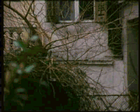

A neighboring balcony from a newly constructed modern apartment building partially demolishes a neoclassical building in Athens.
Based on a sequence of frames extracted from a 1980s film "Here is Athens…..the city before" (Nikos Grammatikopoulos), documenting the destruction of neoclassical architecture in Athens.